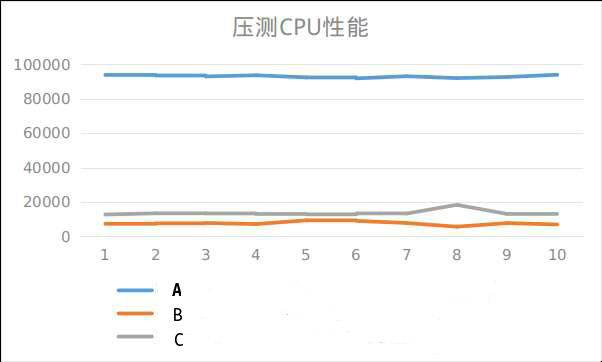

需求如下:
需要将业务数据库集群从老集群切换到新集群
切换后,发现业务的响应时间严重增加,业务可用性影响严重,然后就回滚了
需要排查一下为什么业务响应时间增加了,我们通过日志排查发现sql执行时间边长
下面是新老机器的配置,机器都是AWS的EC2，系统都是centos6.3
| 老从库A(2016年12月开通) | 新从库B(2018年4月开通) | 其他机器C(2018年3月开通) |
|---|---|---|
| 8核 60G内存 SSD高效云盘 | 36核 60G内存 SSD高效云盘 | 36核 60G内存 SSD高效云盘 |
很明显,新集群的机器配置要高于老集群的机器配置,但是为什么新机器的性能反而比老机器的性能差呢?
刚开始我们怀疑是CPU性能有问题,然后在3台机器上分别进行如下测试
1 | time echo “scale=5000; 4*a(1)” | bc -l -q |
但是发现新机器的性能比老机器的好
然后我们使用sysbench进行压测
1 | $ for i in `seq 1 10`;do echo $i;sysbench --threads=8 --time=60 --test=cpu --cpu-max-prime=1000 run ;sleep 10;done |tee sysbench_cpu.log |
我们选取
1 | events/s (eps): 12678.6239 |
作为测试指标
压测结果如下:

可以看到之前机器的CPU性能是新开通机器CPU性能的10倍
向AWS寻求帮助,为啥AWS EC2机器会有这种问题，最后得到的答复
感謝您的耐心等候, 我統整了您所遭遇的 CPU/內存 性能問題如下：
- 您發現在 c4.8xlage 上使用 sysbench 測試 CPU 性能時, 發現其成績較 r3.2xlarge 來得差.
- 您發現在 c4.8xlage 上使用 sysbench 測試 內存 性能時, 發現其成績較 c4.4xlarge 來得差.
之前針對您所遭遇的問題, 我作了相關的測試, 在將 kernel 升級至版本 2.6.32-696.28 以上後, c4.8xlarge 的性能表現能符合預期, 並建議您升級您的 kernel 版本.
您考量到此 AMI 大量部署為您們的底層平台, 升級 OS 版本或是 kernel 會有不可預期的風險, 因此您想了解2版kernel間的差異或是有什麼方式可以在現有的 OS/kernel 版本下將性能提升.
針對此問題我作了相關的研究及實驗如下:
您的 r3.2xlarge 以及 c4.4xlarge 實例, 在系統中所使用的 clocksource 為 “tsc”, 在 c4.8xlarge 中 clocksource 為 “hpet”.
在許多對延遲有要求的環境中, 使用 “tsc” 會有較好的性能表現, tsc 提供 userspace 的調用, 能減少系統調用時的上下文切換, 減少系統的延遲性.
但您可能會有疑問, 為何在您原有的 kernel 2.6.32-279.23.1.mi5.el6.x86_64 中無法選擇使用 tsc 為 clocksource, tsc 甚至不在支持的列表中.
我在c4.8xlarge 實例的 dmesg 中發現在您系統閒置的狀態下會使您的 tsc 時鐘遭到中斷, 使用 tsc 變的不穩定, 因此系統改使用 hpet 為 clocksource.
[ 4.344343] Switching to clocksource hpet
[ 0.019999] Marking TSC unstable due to TSC halts in idle
[ 5.604279] Switching to clocksource tsc
[ 6.120973] Switching to clocksource hpetAWS 在部份特定的EC2實例上支持作業系統級別的 C-state 及 P-state 功能[1], c4.8xlarge 实例类型在支持列表中.
c-state控制当核心处于空闲状态时可以进入的睡眠级别. c-state 从 C0 (最浅空闲状态，此时核心完全唤醒并在执行指令) 开始编号, 一直增进到 C6 (最深空闲状态，此时核心关闭).
使用 turbostat, 我可以觀察到 c4.8xlarge 預設會啓用 c-state 並使CPU核心在閒置時休眠至 c6 的狀態.
c4.8xlarge
turbostat -i 1 –debug
Package Core CPU Avg_MHz %Busy Bzy_MHz TSC_MHz SMI CPU%c1 CPU%c3 CPU%c6 CPU%c7 Pkg%pc2 Pkg%pc3 PkgWatt RAMWatt PKG_% RAM_%
- - - 226 7.61 3035 2840 0 4.73 0.01 87.65 0.00 0.00 0.00 67.50 3.10 0.00 0.00
0 0 0 253 9.04 2878 2824 0 9.07 0.06 81.84 0.00 0.00 0.00 34.06 1.90 0.00 0.00
…
..在c4.4xlarge實例上, 其不支持作業系統級別的 c-state修改, 其預設僅會讓CPU核心在閒置時休眠至 c1 的狀態, 因此在 c4.4xlarge 中並不會發現 tsc 因為系統閒置時遭到中斷的信息.
c4.4xlarge
turbostat -i 1 –debug
Core CPU TSC_MHz SMI CPU%c1 CPU%c3 CPU%c6 CPU%c7 Pkg%pc2 Pkg%pc3 PkgWatt RAMWatt PKG_% RAM_%
- - 2900 0 100.00 0.00 0.00 0.00 0.00 0.00 32.12 1.67 0.00 0.00
0 0 2899 0 100.00 0.00 0.00 0.00 0.00 0.00 32.12 1.67 0.00 0.00
…
..我查閱了相關的 kernel source code, 在針對 tsc 的部份有以下的實作[1].
With Intel CPUs, we have 3 classes
- CPUs where TSC runs at constant rate and does not stop n C-states
- CPUs where TSC runs at constant rate, but will stop in deep C-states
- CPUs where TSC rate will vary based on P/T-states and TSC will stop in deep
C-states.
….NONSTOP_TSC indicates that TSC does not stop in deep C-states.
我檢查了kernel 2.6.32-279.23 的原始碼, 我發現該版本已支持上述的功能.
同時檢查您的 CPU 信息(/proc/cpuinfo), 您的CPU並不支持上述的 “constant_tsc”, “nonstop_tsc” CPU 特性, 在 kernel: 2.6.32-279.23.1.mi5中 CPU flag 信息如下：
flags : fpu vme de pse tsc msr pae mce cx8 apic mtrr pge mca cmov pat pse36 clflush mmx fxsr sse sse2 ht syscall nx lm rep_good xtopology aperfmperf unfair_spinlock pni pclmulqdq est ssse3 fma cx16 sse4_1 sse4_2 x2apic movbe popcnt aes xsave avx f16c rdrand hypervisor lahf_lm abm ida xsaveopt fsgsbase bmi1 erms
因此透过限制 C-state的睡眠级别 (C6 -> C1), 在您原有的 kernel 上, 可以避免如上的 “Marking TSC unstable due to TSC halts in idle” 错误信息, 同时也能在原有 kernel 中使用 tsc 的 clocksource, 並且能提供較好的性能反應.[3]
配置如下, 请您在您的 grub 设置档中, 在 kernel 后加上指定的参数 “intel_idle.max_cstate=0”反”processor.max_cstate=1”，范例如下:
title CentOS (2.6.32-279.23.1.mi5.el6.x86_64)
root (hd0,0)
kernel /boot/vmlinuz-2.6.32-279.23.1.mi5.el6.x86_64 root=LABEL=/ ro xen_blkfront.sda_is_xvda=1 console=ttyS0 xen_pv_hvm=enable crashkernel=auto LANG=en_US.UTF-8 KEYTABLE=us intel_idle.max_cstate=0 processor.max_cstate=1
initrd /boot/initramfs-2.6.32-279.23.1.mi5.el6.x86_64.img配置完后, 请重新开机, 在重开机后, 使用 turbostat 觀察, 系統最深的睡眠狀態會停留在 c1, 同時会发现在 available_clocksource 中已可支持 tsc, 同时预设的 clocksource 也会变更为 tsc.
c4.8xalrge
Package Core CPU Avg_MHz %Busy Bzy_MHz TSC_MHz SMI CPU%c1 CPU%c3 CPU%c6 CPU%c7 Pkg%pc2 Pkg%pc3 PkgWatt RAMWatt PKG_% RAM_%
- - - 125 3.94 3167 2901 0 96.06 0.00 0.00 0.00 0.00 0.00 84.69 2.92 0.00 0.00
0 0 0 147 4.63 3170 2902 0 95.37 0.00 0.00 0.00 0.00 0.00 44.11 1.66 0.00 0.00cat /sys/devices/system/clocksource/clocksource0/available_clocksource
tsc hpet acpi_pm
cat /sys/devices/system/clocksource/clocksource0/current_clocksource
tsc
另外, 在新版的 kernel 2.6.32-696.28 中不需作上述的修改即可使用 tsc, 其原因是在新版的 kernel 中可以正確的辨識 CPU 所支持的特性. 觀察 /proc/cpuinfo , 您可以發現在較新的 kernel中, 能辩識 CPU 的 “constant_tsc” 及 “nonstop_tsc” 特性.
因此並不會因為深度的睡眠而使 tsc 中斷, kernel:2.6.32-696.28中CPU信息如下：flags : fpu vme de pse tsc msr pae mce cx8 apic sep mtrr pge mca cmov pat pse36 clflush mmx fxsr sse sse2 ht syscall nx pdpe1gb rdtscp lm constant_tsc rep_good xtopology nonstop_tsc aperfmperf unfair_spinlock pni pclmulqdq monitor est ssse3 fma cx16 pcid sse4_1 sse4_2 x2apic movbe popcnt tsc_deadline_timer aes xsave avx f16c rdrand hypervisor lahf_lm abm ida xsaveopt invpcid_single pti retpoline fsgsbase bmi1 avx2 smep bmi2 erms invpcid
雖然上述使用修改 kernel參數的部份能使您的系統恢復預期的性能. 但根據您所使用的OS版本(CentOS 6.3)及kernel版本(2.6.32-279.23.1.mi5), 我仍然強烈建議您可以考慮升級至新的發行版本, 新版的 OS/kernel 提供了許多的安全修補以及性能的改進, 並能更好的識別新的硬體及功能.
总结一句话：升级内核版本
最后我们申请新的centos7.3机器，此问题解决
又排查了一下同一时段申请的AWS机器,发现20多台机器存在相同的情况,把这批机器进行下线处理,去掉了一大隐患.